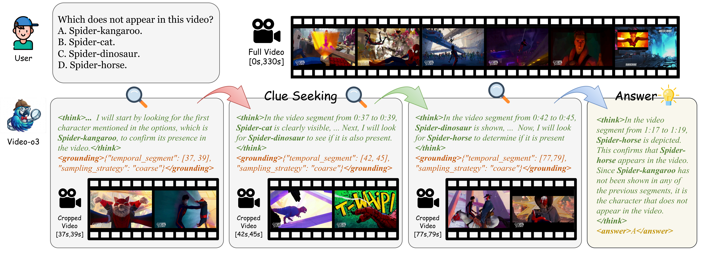
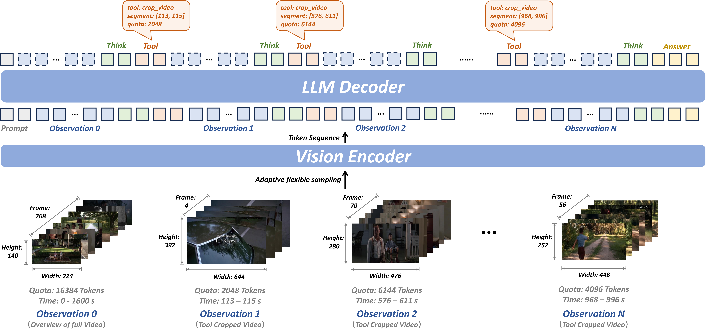
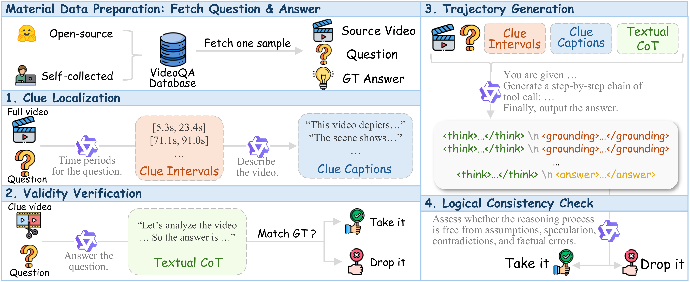

Existing multimodal large language models for long-video understanding predominantly rely on uniform sampling and single-turn inference, limiting their ability to identify sparse yet critical evidence amid extensive redundancy. We introduce Video-o3, a novel framework that supports iterative discovery of salient visual clues, fine-grained inspection of key segments, and adaptive termination once sufficient evidence is acquired. Technically, we address two core challenges in interleaved tool invocation. First, to mitigate attention dispersion induced by the heterogeneity of reasoning and tool-calling, we propose Task-Decoupled Attention Masking, which isolates per-step concentration while preserving shared global context. Second, to control context length growth in multi-turn interactions, we introduce a Verifiable Trajectory-Guided Reward that balances exploration coverage with reasoning efficiency. To support training at scale, we further develop a data synthesis pipeline and construct Seeker-173K, comprising 173K high-quality tool-interaction trajectories for effective supervised and reinforcement learning. Extensive experiments show that Video-o3 substantially outperforms state-of-the-art methods, achieving 72.1% accuracy on MLVU and 46.5% on Video-Holmes. These results demonstrate Video-o3's strong multi-hop evidence-seeking and reasoning capabilities, and validate the effectiveness of native tool invocation in long-video scenarios.
Current Multimodal Large Language Models (MLLMs) struggle with long videos because they typically rely on uniform frame sampling and single-turn inference. This approach often dilutes critical visual evidence within redundant background content.
Video-o3 introduces a paradigm shift by mimicking human behavior. Instead of watching a video passively, it actively explores the content. The model iteratively discovers salient visual clues, inspects key segments with fine-grained detail, and adaptively terminates the search once sufficient evidence is acquired.

Overview of Video-o3. Guided by the user query, the model actively identifies and localizes critical visual clues using native interleaved tool invocation. It autonomously decides whether to continue searching or to conclude the reasoning process.
Key Features:
Video-o3 is designed to solve the challenges of attention dispersion and contextual efficiency in long-video processing. The framework operates on a Think-and-Tool cycle. The model generates structured directives containing temporal windows and visual token quotas. It dynamically invokes the VideoCrop tool to inspect target segments with adaptive spatiotemporal resolution.

Architectural Overview. Video-o3 dynamically executes tool invocations based on previous reasoning to scrutinize specific clue segments. The Vision Encoder uses adaptive flexible sampling, while the LLM Decoder manages the interleaved "Think," "Tool," and "Answer" tokens.
Core Technical Innovations:
Training a model to perform native interleaved tool invocation requires high-quality exploration trajectories, which are scarce in existing datasets. To address this, we developed a scalable automated data synthesis pipeline.

The Data Construction Pipeline. We transform "Video-Question-Answer" triplets into explicit tool exploration trajectories via a four-stage process: Clue Localization, Validity Verification, Trajectory Generation, and Logical Consistency Checks.
About Seeker-173K:
| Methods | Sizes | VideoMME | MLVU | LVBench | LongVideoBench | VideoMMMU | MMVU | Video-Holmes |
|---|---|---|---|---|---|---|---|---|
| Avg | M-Avg | Avg | Avg | Overall | M-Avg | Avg | ||
| Open-source Single-Turn Video MLLMs | ||||||||
| Qwen2.5-VL | 7B | 65.1 | 70.2 | 45.3 | 56.0 | 47.4 | 61.3 | 34.7 |
| LLaVA-Video | 7B | 63.3 | 70.8 | - | 58.2 | - | - | - |
| Video-R1 | 7B | 61.4 | - | - | - | 52.4 | 63.8 | - |
| Rewatch-R1 | 7B | 65.6 | - | 43.3 | - | 51.9 | - | 44.3 |
| Video-Thinker | 7B | - | - | 37.0 | - | - | - | 43.2 |
| Open-source Decoupled Iterative Reasoning Video MLLMs | ||||||||
| Video-RTS | 7B | 63.0 | - | - | 56.6 | 52.7 | 66.4 | - |
| Video-MTR | 7B | 59.0 | 59.7 | 38.6 | 56.4 | - | - | - |
| LOVE-R1 | 7B | 66.2 | 67.4 | 48.2 | 60.1 | - | - | - |
| Open-source Native Multi-turn Tool Invocation Video MLLMs | ||||||||
| Conan | 7B | 60.5 | 63.4 | 39.2 | 56.6 | - | - | 44.6 |
| LongVT | 7B | 64.3 | - | 41.3 | - | 45.4 | - | - |
| Video-Zoomer | 7B | 65.2 | - | 41.5 | 57.7 | 52.2 | - | - |
| Video-o3 (RL) | 7B | 66.1 | 71.9 | 47.5 | 59.3 | 50.0 | 66.9 | 46.1 |
| Video-o3 (SFT+RL) | 7B | 66.5 | 72.1 | 47.6 | 60.5 | 51.7 | 67.2 | 46.5 |
Comparison of our method with existing approaches on video question answering tasks across various benchmarks. Video-o3 significantly outperforms previous methods in long video understanding benchmarks while also demonstrating strong performance in multiple video inference benchmarks.
@article{zeng2026video,
title={Video-o3: Native Interleaved Clue Seeking for Long Video Multi-Hop Reasoning},
author={Zeng, Xiangyu and Zhang, Zhiqiu and Zhu, Yuhan and Li, Xinhao and Wang, Zikang and Ma, Changlian and Zhang, Qingyu and Huang, Zizheng and Ouyang, Kun and Jiang, Tianxiang and others},
journal={arXiv preprint arXiv:2601.23224},
year={2026}
}